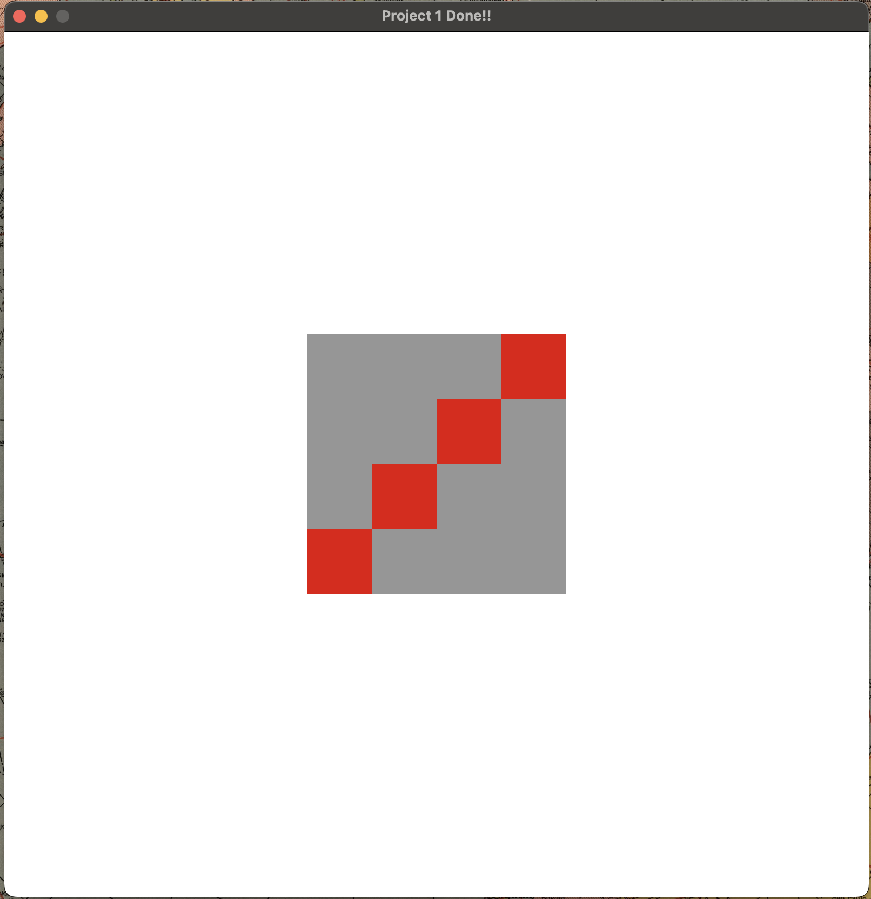
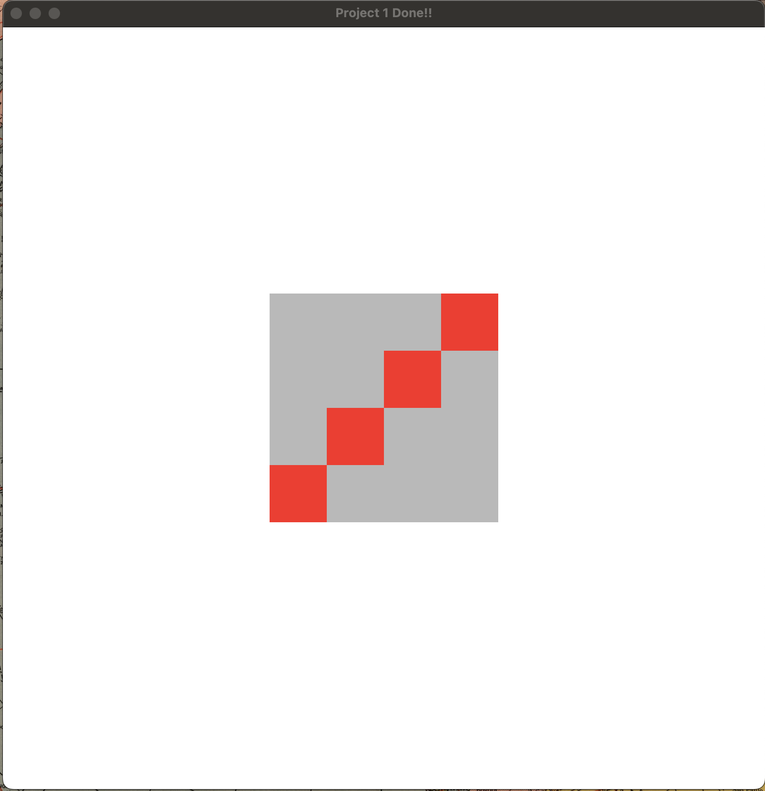
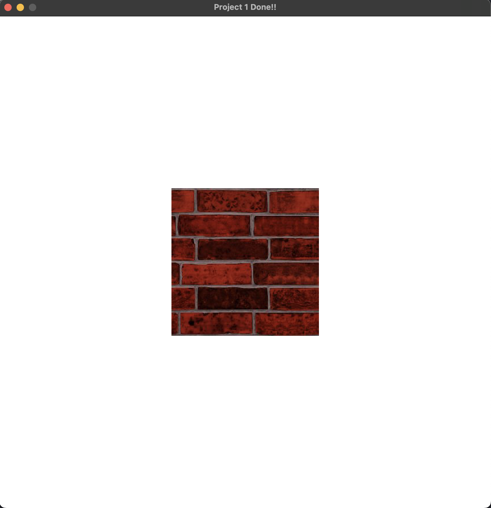
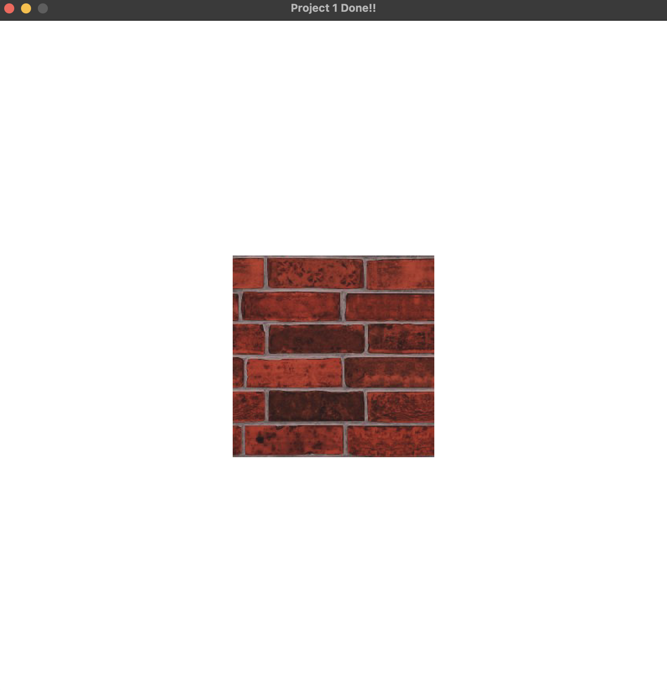

The video below shows the completed project with all required features implemented. Additional videos further down demonstrate each feature individually. One challenge I encountered was calculating the rotation angle so that the square rotated in the direction the mouse was being dragged; this was the feature that took me the longest to implement. Brightening the image also took some time because the scalar I initially added to each pixel was too high, which distorted the image. I eventually realized (after talking about it in class) I needed to clamp the values between 0 and 255.
Download
You can download the project here.
Required Features
-
Translating only when the mouse is inside the rectangle:
-
Scaling the square when the corner is dragged. This video also shows resetting when the
rkey is pressed: -
Rotating the square when the user drags on the edges:
-
Texturing the square with an image loaded from a PPM file, and making the image brighter without distorting the colors:
  